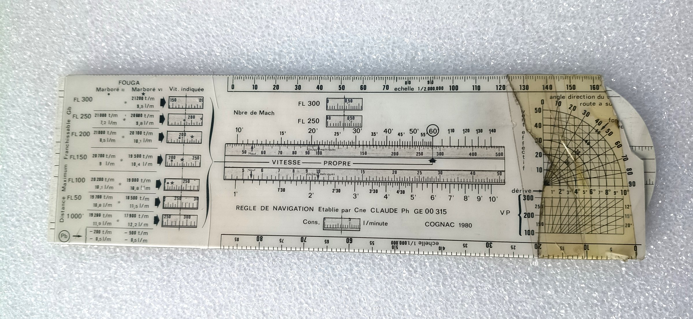
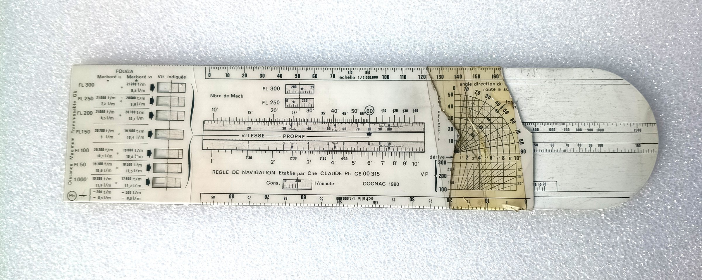
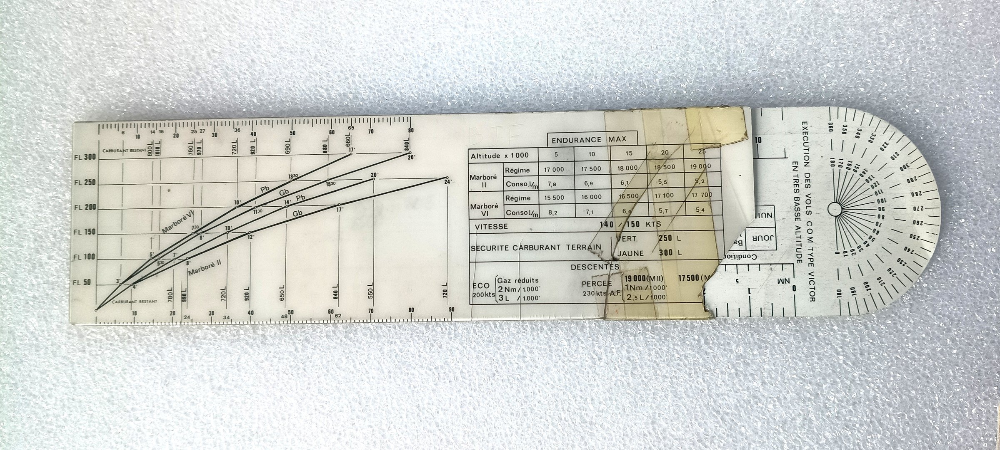
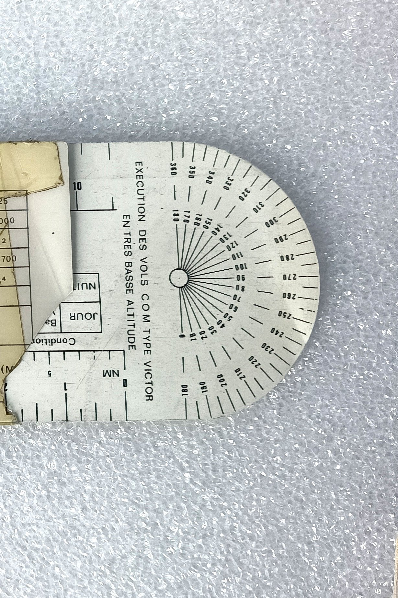

Le mode d’emploi illustré de la règle à calcul linéaire établie à Cognac en 1980 — la seule pièce de l’instrumentation à porter, côte à côte, le Marboré II et le Marboré VI.
Là où le computeur de vol est un disque tournant dédié au seul Marboré II, la règle de navigation est une règle à calcul linéaire — un corps gravé, une coulisse mobile — qui traite dans un même geste les deux motorisations du Magister.
Distance maximum franchissable, endurance maximum, montée et descentes — pour le Marboré II comme pour le Marboré VI.
Vitesse propre, temps, distance, nombre de Mach et consommation, lus sur des échelles logarithmiques glissantes.
Deux réglettes gravées sur les bords du corps : 1/2.000.000ᵉ en haut, 1/1.000.000ᵉ en bas.
Un abaque de vent transparent (dérive, vent effectif) au recto ; un rapporteur 360° au verso.
Partout où les deux moteurs cohabitent — colonnes du tableau, fenêtres de lecture, courbes de montée — le graveur distingue les valeurs par deux symboles : ● Marboré II et ★ Marboré VI. Cette page reprend la même convention.
Le cartouche central porte : « REGLE DE NAVIGATION — Etablie par Cne CLAUDE Ph — GE 00 315 » et, en regard, « COGNAC 1980 ». Il s’agit donc d’une règle établie au sein du groupement école de la base de Cognac, où le Magister assurait la formation des pilotes — un outil de série d’unité, et non une fourniture du constructeur.
Toutes les valeurs ci-dessous sont relevées sur les clichés de l’instrument, seule source de référence. Les tableaux gravés (distance maximum, endurance maximum, descentes, sécurités) sont lisibles et transcrits intégralement. En revanche l’abaque de montée est un faisceau de courbes dont la lecture fine dépasse la résolution des clichés actuels : il est ici présenté en fac-similé, non tabulé. Chaque incertitude est signalée à sa place.
La règle se lit dans le sens de la longueur. Chaque face juxtapose trois blocs : un tableau de performances, un bloc de calcul, et un instrument graphique en bout de règle.
Sous l’en-tête FOUGA, trois colonnes : Marboré II, Marboré VI, Vit. indiquée. Sept lignes de niveau, du FL 300 en haut au palier de 1 000 pieds en bas. Chaque case donne le régime à afficher et la consommation en litres par minute.
Le titre est gravé verticalement sur le champ : « Distance Maximum Franchissable Gb ». Le tableau vaut donc pour les gros bidons ; une ligne de correction en pied, repérée par un Pb cerclé, ramène les valeurs aux petits bidons.
Le cœur de la règle empile, du haut vers le bas : la réglette 1/2.000.000ᵉ, les deux fenêtres Nbre de Mach (FL 300 et FL 250), la double échelle VITESSE PROPRE encadrée de ses échelles de temps, la fenêtre Cons. — l/minute, et la réglette 1/1.000.000ᵉ en pied.
C’est là que se lit le cartouche de provenance, et le repère VP qui accroche l’échelle des vitesses propres (100 à 300) au calculateur de vent voisin.
Les cases « Vit. indiquée », « Nbre de Mach » et « Cons. » ne sont pas des cartouches gravés : ce sont des fenêtres ouvertes sur une bande mobile. Ce second cliché, coulisse tirée, le démontre — les fenêtres de gauche se vident, celles du Mach affichent une graduation étrangère, et l’extrémité droite du corps découvre des échelles jusque-là masquées (50 à 150, 500 à 1 500).
Au repos (cliché précédent), les lectures redeviennent cohérentes entre elles : Mach 0,50 au FL 300 et au FL 250, et des vitesses indiquées qui s’accordent avec ce Mach.
Le nombre exact de pièces mobiles (une coulisse unique portant l’abaque de vent, ou une coulisse plus un curseur transparent indépendant) et la position de référence des fenêtres ne se laissent pas trancher sur quatre clichés. C’est la première mesure à faire pour la règle virtuelle.


Un faisceau de quatre courbes monte du coin inférieur gauche vers le FL 300 : le Marboré VI à gauche (montée plus courte, plus rapide), le Marboré II à droite, chacun dédoublé en Pb et Gb. Le long de chaque courbe, des points cotés donnent le temps de montée (de 3′ à 24′) ; en marge, des lignes de rappel donnent le carburant restant au passage de chaque niveau.
L’extrémité arrondie porte un rapporteur 360° à rose complète, titré « EXECUTION DES VOLS COM TYPE VICTOR EN TRES BASSE ALTITUDE » — de quoi relever un cap sur la carte sans quitter la règle des mains. À côté, un encadré JOUR / NUIT et un bloc « Conditions… », partiellement masqué par la coulisse sur tous les clichés disponibles.

Quatre tableaux gravés couvrent les deux régimes de croisière qui comptent — aller le plus loin, ou rester le plus longtemps — puis la descente et les sécurités.
À chaque niveau, le régime qui procure la plus grande distance et la consommation qui l’accompagne. Le Marboré VI, plus puissant, tient le même profil 500 à 1 300 t/m plus bas que le Marboré II — mais consomme davantage à tous les niveaux.
| Niveau | ● Marboré II | ★ Marboré VI | ||
|---|---|---|---|---|
| Régime | Cons. | Régime | Cons. | |
| FL 300 | 21 200 t/m | 9,5 l/m | ||
| FL 250 | 21 000 t/m | 7,2 l/m | 20 600 t/m | 9,8 l/m |
| FL 200 | 21 000 t/m | 8,5 l/m | 20 100 t/m | 10,1 l/m |
| FL 150 | 20 700 t/m | 9 l/m | 19 500 t/m | 10,4 l/m |
| FL 100 | 20 200 t/m | 10,1 l/m | 19 000 t/m | 10,8 l/m |
| FL 50 | 19 700 t/m | 10,8 l/m | 18 500 t/m | 11,5 l/m |
| 1 000 ft | 19 200 t/m | 11,9 l/m | 17 900 t/m | 12,2 l/m |
| Correction Pb (petits bidons) | − 200 t/m | − 0,5 l/m | − 500 t/m | − 0,5 l/m |
Case hachurée : le Marboré II n’a pas de valeur gravée au FL 300. Sa colonne sature à 21 000 t/m dès le FL 200 — le régime nécessaire pour tenir le FL 300 sortirait de la plage utilisable. Le Marboré VI, lui, poursuit jusqu’à 21 200 t/m.
Les deux séries sont régulières et se répondent : le régime monte avec le niveau, la consommation baisse. Une seule irrégularité, et elle est logique — du FL 200 au FL 250, le Marboré II garde le même régime (21 000 t/m) ; la consommation chute alors franchement (8,5 → 7,2 l/m) au lieu de la baisse douce observée ailleurs, puisque rien ne vient plus compenser la raréfaction de l’air.
À droite du tableau, une fenêtre par niveau montre l’échelle des vitesses indiquées, où les repères ● et ★ pointent la valeur à tenir pour chaque moteur. La vitesse croît en descendant : de l’ordre de 150–200 kt aux niveaux hauts, 200–250 kt vers le FL 150–100, 250–300 kt en bas.
Au-dessus, deux fenêtres Nbre de Mach couvrent les seuls niveaux où le Mach compte, FL 300 et FL 250. Les deux affichent, au repos, 0,50 : la croisière de plus grande distance se tient à Mach constant en altitude — et ce Mach 0,50 recoupe bien les vitesses indiquées lues en regard.
Les repères ●/★ se lisent dans les fenêtres, mais leur position exacte sur la graduation demande un cliché macro. Seules les plages sont données ci-dessus, pas de valeur au nœud près.
L’autre régime de référence : rester en l’air le plus longtemps possible, à 140–150 kt. Le tableau est gravé au verso, altitudes en colonnes — la page en conserve la disposition d’origine.
| Altitude × 1 000 | 5 | 10 | 15 | 20 | 25 | |
|---|---|---|---|---|---|---|
| ● Marboré II | Régime | 17 000 | 17 500 | 18 000 | 18 500 | 19 000 |
| Cons. l/m | 7,8 | 6,9 | 6,1 | 5,5 | 5,2 | |
| ★ Marboré VI | Régime | 15 500 | 16 000 | 16 500 | 17 100 | 17 700 |
| Cons. l/m | 8,2 | 7,1 | 6,4 | 5,7 | 5,4 | |
| Vitesse | 140 / 150 kt | |||||
La règle s’arrête au niveau 25 ; le computeur, lui, pousse la même table jusqu’au niveau 30 (19 700 t/m, 5,0 l/m) — pour le seul Marboré II.
La ligne Marboré II de cette table reproduit exactement, cellule par cellule, la table « régime / consommation » gravée sur la face 336 du computeur de vol — mêmes régimes (17 000 → 19 000 t/m), mêmes consommations (7,8 → 5,2 l/m), même vitesse de référence (140–150 kt). Deux instruments distincts, deux gravures indépendantes, un accord parfait.
Ce recoupement est la meilleure garantie de lecture dont on dispose sur cette page : il valide la transcription du tableau, et il donne son sens à la seconde ligne — la colonne Marboré VI prolonge au second moteur une table que le computeur ne connaissait que pour le premier.
Deux profils gravés sous la table d’endurance, chacun exprimé en milles nautiques et litres par 1 000 pieds perdus — de quoi retrancher la descente d’un coup d’œil.
| Profil | Vitesse | Régime | Distance | Carburant |
|---|---|---|---|---|
| ÉCO | 200 kt | Gaz réduits | 2 Nm / 1 000 ft | 3 L / 1 000 ft |
| PERCÉE | 230 kt · A.F. sortis | ● 19 000 · ★ 17 500 | 1 Nm / 1 000 ft | 2,5 L / 1 000 ft |
La descente économique va deux fois plus loin pour 1 000 pieds perdus, mais coûte 3 L au lieu de 2,5 L : on choisit la percée pour arriver vite et bas, l’éco pour gagner du terrain.
Les deux seuils de sécurité carburant gravés au verso.
Quatre courbes, du sol au FL 300 : ★ Marboré VI à gauche en Pb puis Gb, ● Marboré II à droite de même. On y lit le temps de montée (points cotés de 3′ à 24′) et, en marge, le carburant restant à chaque niveau.
L’ordre des courbes raconte l’essentiel : à bidons égaux, le Marboré VI grimpe plus vite que le Marboré II ; à moteur égal, les petits bidons grimpent plus vite que les gros. Atteindre le FL 300 demande de l’ordre de 17 minutes au mieux, 24 au pire.
Cet abaque est le seul élément de la règle que cette page ne transcrit pas en tableau, et c’est délibéré. Trois points restent indécidables sur les clichés actuels :
Plutôt qu’un tableau plausible mais invérifiable, la page s’en tient au fac-similé. Le relevé demande un cliché à plat, éclairage rasant, de la seule zone de l’abaque — et il conditionne la règle virtuelle.
Passé les tableaux, la règle redevient ce qu’elle est : une règle à calcul. Deux réglettes cartographiques, un jeu d’échelles logarithmiques, un abaque de vent.
Elles occupent les deux bords du corps et se lisent directement sur la carte :
Deux échelles opposées sur un même objet, c’est un choix d’ergonomie : on retourne la règle bout pour bout selon la carte utilisée, sans jamais avoir à lire à l’envers.
Le bandeau VITESSE PROPRE superpose deux règles logarithmiques glissantes, chacune graduée deux fois — en nautiques et en unités métriques — et encadrée par deux échelles de temps :
Le principe est celui de tous les computeurs de vol : on aligne une vitesse sur l’index 60, et l’on lit en regard n’importe quel couple temps ↔ distance. La fenêtre Cons. — l/minute attelle la consommation au même mouvement.
En bout de recto, une plaquette transparente — jaunie, fendue, recollée d’adhésif — porte un réseau de courbes. Ses quatre entrées sont gravées en clair :
C’est un abaque du triangle des vitesses : on entre avec l’angle vent/route et la force, on ressort avec le vent effectif et la dérive — sans tracé, sans rapporteur.
La plaquette de vent est la pièce fragile de l’ensemble : transparent jauni, plusieurs fêlures traversantes, et des bandes d’adhésif — anciennes, elles-mêmes brunies — qui la maintiennent. Une partie des graduations passe sous l’adhésif. Toute manipulation de la coulisse la sollicite.